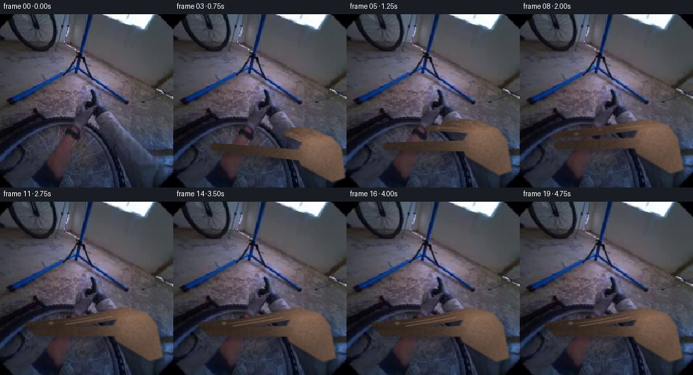
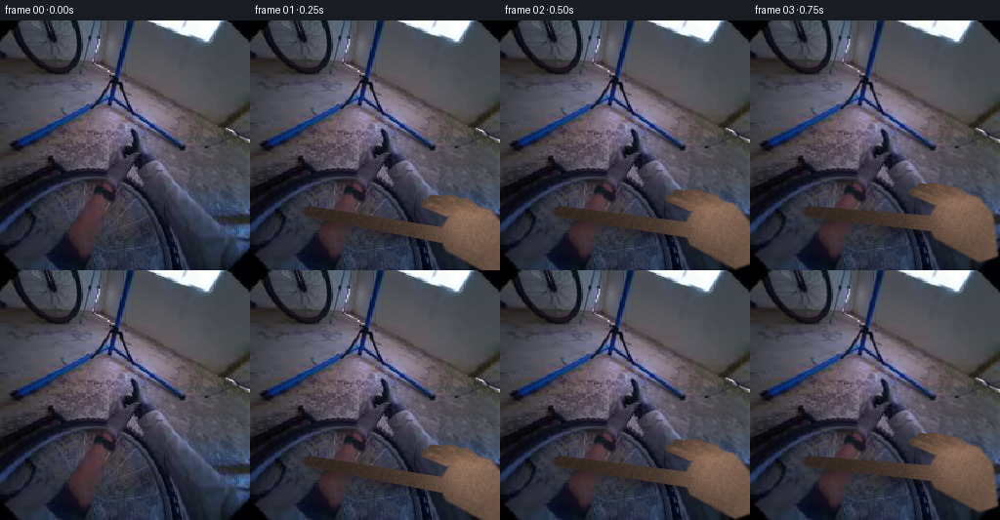
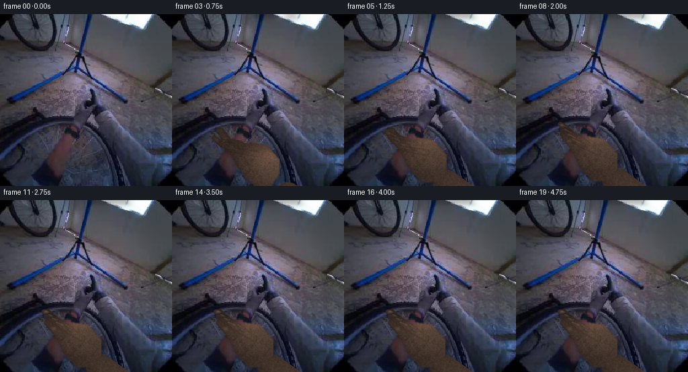
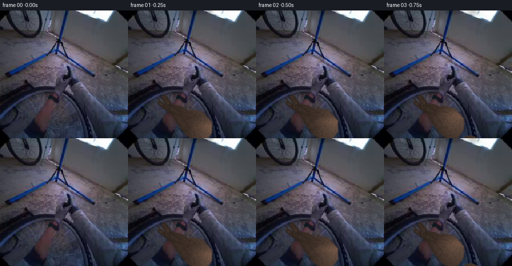
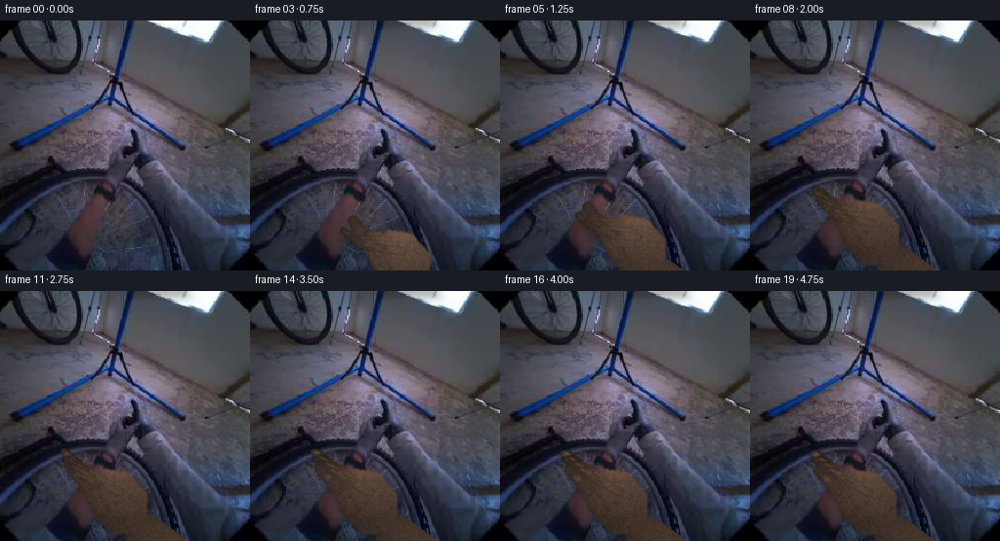
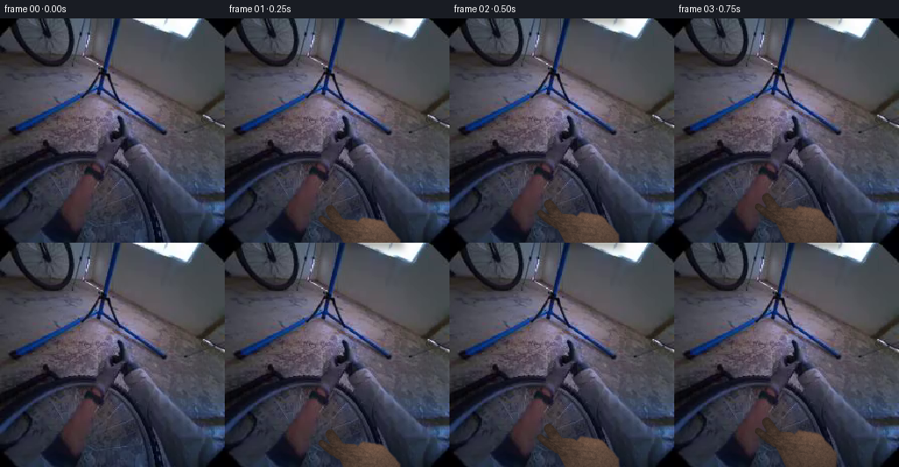

CODING AGENTS AS PIXEL WORLD MODELS
traex/DeepSeek-V4.1-Flash · common50_0023
点击播放 · 原生 RGB 像素
逐轮保存的候选
回放视频、检查图与代码变化。
每份候选均可单独播放。实际图片检查记录在下方工具轨迹中。
候选 01播放与检查图
点击播放 · 原生 RGB 像素


展开代码变化
--- 上一保存版本
+++ 本次保存版本
@@ -0,0 +1,241 @@
+from __future__ import annotations
+
+from pathlib import Path
+
+import cv2
+import numpy as np
+from PIL import Image
+
+import artifact_io
+
+
+W = H = 256
+N = 20
+FPS = 4
+CASE = Path(__file__).resolve().parent
+
+
+def smoothstep(a: float, b: float, x: float) -> float:
+ t = np.clip((x - a) / (b - a), 0.0, 1.0)
+ return float(t * t * (3.0 - 2.0 * t))
+
+
+def polygon_alpha(points: np.ndarray, blur: float = 0.8) -> np.ndarray:
+ mask = np.zeros((H, W), np.uint8)
+ cv2.fillPoly(mask, [np.round(points).astype(np.int32)], 255)
+ if blur:
+ mask = cv2.GaussianBlur(mask, (0, 0), blur)
+ return mask.astype(np.float32) / 255.0
+
+
+def capsule(p0, p1, r0: float, r1: float | None = None) -> np.ndarray:
+ """Rounded tapered segment, with a soft antialiased silhouette."""
+ p0 = np.asarray(p0, np.float32)
+ p1 = np.asarray(p1, np.float32)
+ r1 = r0 if r1 is None else r1
+ yy, xx = np.mgrid[:H, :W].astype(np.float32)
+ v = p1 - p0
+ ll = max(float(v @ v), 1e-6)
+ t = np.clip(((xx - p0[0]) * v[0] + (yy - p0[1]) * v[1]) / ll, 0, 1)
+ qx = p0[0] + t * v[0]
+ qy = p0[1] + t * v[1]
+ r = r0 + t * (r1 - r0)
+ d = np.hypot(xx - qx, yy - qy)
+ return np.clip(r + 0.8 - d, 0, 1)
+
+
+def soft_shadow(alpha: np.ndarray, dx: int, dy: int, sigma: float = 2.5) -> np.ndarray:
+ moved = np.roll(np.roll(alpha, dy, axis=0), dx, axis=1)
+ return cv2.GaussianBlur(moved, (0, 0), sigma)
+
+
+def texture_field(seed: int = 4) -> np.ndarray:
+ rng = np.random.default_rng(seed)
+ noise = rng.normal(0, 1, (H, W)).astype(np.float32)
+ fine = cv2.GaussianBlur(noise, (0, 0), 0.65)
+ pores = cv2.GaussianBlur(rng.normal(0, 1, (H, W)).astype(np.float32), (0, 0), 0.3)
+ ridges = np.zeros_like(noise)
+ yy, xx = np.mgrid[:H, :W]
+ ridges += 0.65 * np.sin(xx * 0.55 + yy * 0.21)
+ ridges += 0.35 * np.sin(xx * 0.18 - yy * 0.61)
+ return fine * 8.0 + pores * 2.2 + ridges * 1.4
+
+
+def draw_hand(frame: np.ndarray, phase: float) -> np.ndarray:
+ """
+ Foreshortened left hand reaching from the lower right and gripping a spoke.
+
+ phase runs from 0 at reach start to 1 at the settled grip.
+ """
+ img = frame.astype(np.float32)
+ reach = smoothstep(0.00, 0.58, phase)
+ press = smoothstep(0.30, 0.62, phase)
+ curl = smoothstep(0.48, 0.92, phase)
+ settle = smoothstep(0.76, 1.00, phase)
+
+ # The wrist travels a short distance toward the wheel, then slows on contact.
+ wrist = np.array([
+ 250.0 - 26.0 * reach - 1.2 * settle,
+ 252.0 - 27.0 * reach + 1.0 * settle,
+ ])
+ palm = wrist + np.array([-31.0, -25.0])
+ palm += np.array([-4.0, -5.0]) * press
+
+ # Grip axis follows the prominent dark spoke into the wheel.
+ spoke_a = np.array([106.0, 158.0])
+ spoke_b = np.array([11.0, 203.0])
+ grip = spoke_a * 0.37 + spoke_b * 0.63
+ grip += np.array([-2.0, -1.0]) * press
+
+ # Main hand silhouette. Knuckle line is angled toward the upper left.
+ back = np.array([
+ palm + (-11.0, -29.0),
+ palm + (5.0, -37.0),
+ palm + (29.0, -31.0),
+ palm + (43.0, -14.0),
+ wrist + (17.0, 4.0),
+ wrist + (-2.0, 10.0),
+ palm + (-17.0, 10.0),
+ palm + (-24.0, -7.0),
+ ])
+ a_back = polygon_alpha(back, 1.0)
+
+ # Thumb enters first and lies along the near side of the spoke.
+ thumb_base = palm + np.array([-20.0, -5.0])
+ thumb_tip = grip + np.array([14.0, 9.0]) - np.array([5.0, 2.0]) * curl
+ a_thumb = capsule(thumb_base, thumb_tip, 7.7, 5.5)
+
+ fingers = []
+ # Four tapered finger chains. They start extended and close inward in sequence.
+ roots = [
+ palm + np.array([-16.0, -30.0]),
+ palm + np.array([-7.0, -34.0]),
+ palm + np.array([2.0, -35.0]),
+ palm + np.array([11.0, -33.0]),
+ ]
+ offsets = [
+ (-1.0, -8.0),
+ (2.0, -7.0),
+ (5.0, -6.0),
+ (8.0, -4.0),
+ ]
+ lengths = [(15.5, 10.5), (18.0, 12.0), (17.0, 11.0), (14.0, 9.5)]
+ for i, ((r0x, r0y), (ox, oy), (l1, l2)) in enumerate(zip(roots, offsets, lengths)):
+ root = np.array([r0x, r0y])
+ target = grip + np.array([ox, oy])
+ # Open hand: finger extends beyond the grip toward lower-left.
+ open_mid = root + np.array([-l1 * 0.92, -l1 * 0.35]) + np.array([i * 2.0, 0])
+ open_tip = open_mid + np.array([-l2 * 0.78, -l2 * 0.35 + 2.0])
+ closed_mid = root + (target - root) * 0.55 + np.array([0.0, 3.0 + i * 0.7])
+ closed_tip = target + np.array([-2.0 + i * 1.3, 4.0 + i * 0.8])
+ delay = i * 0.055
+ f = smoothstep(0.30 + delay, 0.80 + delay, phase)
+ mid = open_mid * (1 - f) + closed_mid * f
+ tip = open_tip * (1 - f) + closed_tip * f
+ # First joint bends slightly downward as the finger wraps the spoke.
+ mid += np.array([-1.5, 2.2]) * curl
+ a1 = capsule(root, mid, 5.6 - i * 0.25, 4.8 - i * 0.18)
+ a2 = capsule(mid, tip, 4.9 - i * 0.18, 3.8 - i * 0.15)
+ fingers.append((a1, a2, root, mid, tip, i))
+
+ # Paint far shadow, then the actual hand layers.
+ hand_alpha = np.maximum.reduce([a_back, a_thumb] + [np.maximum(a1, a2) for a1, a2, *_ in fingers])
+ shadow = soft_shadow(hand_alpha, 5, 7, 3.4)
+ img *= (1.0 - 0.28 * shadow[..., None])
+
+ tex = texture_field()
+ skin_dark = np.array([86.0, 65.0, 57.0], np.float32)
+ skin_mid = np.array([127.0, 99.0, 83.0], np.float32)
+ skin_light = np.array([162.0, 129.0, 108.0], np.float32)
+
+ yy, xx = np.mgrid[:H, :W].astype(np.float32)
+ # Low-key directional light from upper right matches the bright window.
+ light = np.clip(0.78 + 0.42 * ((xx - 128) / 128.0) - 0.18 * ((yy - 128) / 128.0), 0.55, 1.25)
+ skin = skin_mid[None, None, :] * light[..., None]
+ skin += (skin_light - skin_mid)[None, None, :] * np.clip((light - 0.85) * 1.8, 0, 1)[..., None]
+ skin += tex[..., None] * np.array([1.0, 0.82, 0.70], np.float32)
+
+ # Broad palm shading and a warm knuckle highlight.
+ palm_c = palm + np.array([-3.0, -14.0])
+ d = np.hypot((xx - palm_c[0]) / 39.0, (yy - palm_c[1]) / 32.0)
+ palm_shade = np.clip(1.07 - 0.26 * d, 0.76, 1.05)
+ skin *= palm_shade[..., None]
+ knuckle = np.exp(-(((xx - (palm[0] + 2)) / 30.0) ** 2 + ((yy - (palm[1] - 27)) / 8.0) ** 2))
+ skin += knuckle[..., None] * np.array([19.0, 12.0, 8.0], np.float32)
+
+ def blend_alpha(alpha: np.ndarray, color: np.ndarray) -> None:
+ nonlocal img
+ a = alpha[..., None]
+ img = img * (1 - a) + color * a
+
+ blend_alpha(a_back, skin)
+
+ # Thumb: brighter dorsal surface, dark crease at its base.
+ thumb_col = skin * 0.97
+ blend_alpha(a_thumb, thumb_col)
+
+ # Fingers receive alternating light so overlapping digits remain legible.
+ for a1, a2, root, mid, tip, i in fingers:
+ tint = np.array([1.00, 0.98, 0.96], np.float32) - np.array([0.05, 0.04, 0.03]) * (i % 2)
+ blend_alpha(a1, skin * tint)
+ blend_alpha(a2, skin * (tint * 0.97))
+
+ # Dark contact crease at the proximal joint.
+ crease = capsule(root * 0.36 + mid * 0.64, mid, 1.25, 1.0)
+ blend_alpha(crease * 0.38, img * 0.58 + np.array([48.0, 36.0, 31.0]))
+
+ # Small specular ridge on the near/right edge.
+ p0 = root * 0.52 + mid * 0.48 + np.array([1.7, -0.7])
+ p1 = mid * 0.52 + tip * 0.48 + np.array([1.4, -0.7])
+ ridge = capsule(p0, p1, 1.0, 0.8) * (0.18 + 0.18 * curl)
+ blend_alpha(ridge, skin_light)
+
+ # Nails appear only on the partly visible first finger and thumb.
+ a1, a2, root, mid, tip, i = fingers[0]
+ nail_c = mid * 0.58 + tip * 0.42
+ nail = np.exp(-(((xx - nail_c[0]) / 3.3) ** 2 + ((yy - nail_c[1]) / 2.2) ** 2))
+ nail *= a2
+ blend_alpha(nail * (0.25 + 0.23 * curl), np.array([157.0, 128.0, 120.0], np.float32))
+
+ # Contact shadow where fingers meet the spoke.
+ ca = np.exp(-(((xx - grip[0]) / 13.0) ** 2 + ((yy - grip[1]) / 5.0) ** 2))
+ img *= (1.0 - 0.17 * ca[..., None] * curl)
+
+ # Subtle hand/camera parallax; zero at frame 0 so the source remains exact.
+ if phase > 0:
+ amp = 0.55 * smoothstep(0.08, 0.8, phase)
+ sx = amp * np.sin(phase * np.pi * 1.2)
+ sy = amp * 0.55 * np.sin(phase * np.pi * 1.7 + 0.6)
+ m = np.float32([[1, 0, sx], [0, 1, sy]])
+ img = cv2.warpAffine(img, m, (W, H), flags=cv2.INTER_LINEAR, borderMode=cv2.BORDER_REFLECT)
+
+ return np.clip(img, 0, 255).astype(np.uint8)
+
+
+def make_frames() -> np.ndarray:
+ first = np.asarray(Image.open(CASE / "first_frame.png").convert("RGB"), dtype=np.uint8)
+ if first.shape != (H, W, 3):
+ raise ValueError(f"unexpected first frame shape: {first.shape}")
+
+ frames = [first]
+ for i in range(1, N):
+ t = i / (N - 1)
+ # Faster reach, decisive contact near 1.8 s, then a small grip adjustment.
+ phase = float(np.clip(t * 1.22, 0, 1))
+ phase = 1 - (1 - phase) ** 1.7
+ frames.append(draw_hand(first, phase))
+
+ out = np.stack(frames)
+ # Enforce the contract exactly, independent of drawing arithmetic.
+ out[0] = first
+ return out
+
+
+def main() -> None:
+ frames = make_frames()
+ artifact_io.save(frames, CASE)
+ print(f"wrote {len(frames)} frames to {CASE}")
+
+
+if __name__ == "__main__":
+ main()
候选 02播放与检查图
点击播放 · 原生 RGB 像素


展开代码变化
--- 上一保存版本
+++ 本次保存版本
@@ -44,6 +44,25 @@
return np.clip(r + 0.8 - d, 0, 1)
+def capsule_detail(p0, p1, r0: float, r1: float | None = None):
+ """Capsule alpha plus a cross-section shading field."""
+ p0 = np.asarray(p0, np.float32)
+ p1 = np.asarray(p1, np.float32)
+ r1 = r0 if r1 is None else r1
+ yy, xx = np.mgrid[:H, :W].astype(np.float32)
+ v = p1 - p0
+ ll = max(float(v @ v), 1e-6)
+ t = np.clip(((xx - p0[0]) * v[0] + (yy - p0[1]) * v[1]) / ll, 0, 1)
+ qx = p0[0] + t * v[0]
+ qy = p0[1] + t * v[1]
+ r = r0 + t * (r1 - r0)
+ d = np.hypot(xx - qx, yy - qy)
+ alpha = np.clip(r + 0.8 - d, 0, 1)
+ cross = np.clip(d / np.maximum(r, 1.0), 0, 1)
+ shade = 0.91 + 0.14 * (1.0 - cross * cross) + 0.025 * t
+ return alpha, shade
+
+
def soft_shadow(alpha: np.ndarray, dx: int, dy: int, sigma: float = 2.5) -> np.ndarray:
moved = np.roll(np.roll(alpha, dy, axis=0), dx, axis=1)
return cv2.GaussianBlur(moved, (0, 0), sigma)
@@ -73,73 +92,91 @@
curl = smoothstep(0.48, 0.92, phase)
settle = smoothstep(0.76, 1.00, phase)
- # The wrist travels a short distance toward the wheel, then slows on contact.
- wrist = np.array([
- 250.0 - 26.0 * reach - 1.2 * settle,
- 252.0 - 27.0 * reach + 1.0 * settle,
- ])
- palm = wrist + np.array([-31.0, -25.0])
- palm += np.array([-4.0, -5.0]) * press
-
- # Grip axis follows the prominent dark spoke into the wheel.
- spoke_a = np.array([106.0, 158.0])
- spoke_b = np.array([11.0, 203.0])
- grip = spoke_a * 0.37 + spoke_b * 0.63
- grip += np.array([-2.0, -1.0]) * press
-
- # Main hand silhouette. Knuckle line is angled toward the upper left.
+ # The wrist enters from below the frame and slides up-left toward the wheel.
+ wrist = np.array([199.0, 300.0]) + reach * np.array([-52.0, -48.0])
+ wrist += np.array([-1.0, 1.0]) * settle
+ palm = wrist + np.array([-29.0, -37.0])
+ palm += np.array([-3.0, -3.0]) * press
+
+ # The grip lands on the dark, near-horizontal spoke to the left of the hub.
+ grip = np.array([70.0, 157.0])
+ grip += np.array([-1.5, 0.5]) * press
+
+ # Main hand silhouette. The long axis points from lower right to upper left.
back = np.array([
- palm + (-11.0, -29.0),
- palm + (5.0, -37.0),
- palm + (29.0, -31.0),
- palm + (43.0, -14.0),
- wrist + (17.0, 4.0),
- wrist + (-2.0, 10.0),
- palm + (-17.0, 10.0),
- palm + (-24.0, -7.0),
- ])
- a_back = polygon_alpha(back, 1.0)
-
- # Thumb enters first and lies along the near side of the spoke.
- thumb_base = palm + np.array([-20.0, -5.0])
- thumb_tip = grip + np.array([14.0, 9.0]) - np.array([5.0, 2.0]) * curl
- a_thumb = capsule(thumb_base, thumb_tip, 7.7, 5.5)
+ (93.0, 198.0),
+ (108.0, 183.0),
+ (132.0, 187.0),
+ (151.0, 208.0),
+ (151.0, 230.0),
+ (139.0, 248.0),
+ (116.0, 249.0),
+ (98.0, 232.0),
+ (91.0, 214.0),
+ ], np.float32)
+ back += (wrist - np.array([147.0, 252.0])) * 0.34
+ back += np.array([-1.0, -1.0]) * press
+ a_back = polygon_alpha(back, 0.9)
+
+ # The forearm joins the palm to the bottom edge and carries most of the reach.
+ forearm_a = capsule_detail(wrist + (1.0, -4.0), (211.0, 300.0), 20.0, 25.0)
+ a_forearm, forearm_shade = forearm_a
+
+ # Thumb approaches beneath the spoke before the fingers close.
+ thumb_base = np.array([103.0, 224.0]) + (wrist - np.array([147.0, 252.0])) * 0.22
+ thumb_mid = np.array([88.0, 198.0]) + np.array([2.0, 4.0]) * curl
+ thumb_tip = np.array([72.0, 174.0]) + np.array([1.0, 8.0]) * curl
+ thumb_tip += np.array([-2.0, 0.0]) * press
+ a_thumb1, thumb_shade1 = capsule_detail(thumb_base, thumb_mid, 8.4, 6.8)
+ a_thumb2, thumb_shade2 = capsule_detail(thumb_mid, thumb_tip, 6.7, 5.3)
fingers = []
- # Four tapered finger chains. They start extended and close inward in sequence.
+ # Index, middle, ring, and little finger, ordered from upper to lower knuckle.
roots = [
- palm + np.array([-16.0, -30.0]),
- palm + np.array([-7.0, -34.0]),
- palm + np.array([2.0, -35.0]),
- palm + np.array([11.0, -33.0]),
+ np.array([98.0, 191.0]),
+ np.array([106.0, 195.0]),
+ np.array([114.0, 200.0]),
+ np.array([122.0, 205.0]),
]
- offsets = [
- (-1.0, -8.0),
- (2.0, -7.0),
- (5.0, -6.0),
- (8.0, -4.0),
+ closed_points = [
+ (66.0, 159.0),
+ (70.0, 164.0),
+ (75.0, 169.0),
+ (80.0, 174.0),
]
- lengths = [(15.5, 10.5), (18.0, 12.0), (17.0, 11.0), (14.0, 9.5)]
- for i, ((r0x, r0y), (ox, oy), (l1, l2)) in enumerate(zip(roots, offsets, lengths)):
- root = np.array([r0x, r0y])
- target = grip + np.array([ox, oy])
- # Open hand: finger extends beyond the grip toward lower-left.
- open_mid = root + np.array([-l1 * 0.92, -l1 * 0.35]) + np.array([i * 2.0, 0])
- open_tip = open_mid + np.array([-l2 * 0.78, -l2 * 0.35 + 2.0])
- closed_mid = root + (target - root) * 0.55 + np.array([0.0, 3.0 + i * 0.7])
- closed_tip = target + np.array([-2.0 + i * 1.3, 4.0 + i * 0.8])
- delay = i * 0.055
- f = smoothstep(0.30 + delay, 0.80 + delay, phase)
- mid = open_mid * (1 - f) + closed_mid * f
- tip = open_tip * (1 - f) + closed_tip * f
- # First joint bends slightly downward as the finger wraps the spoke.
- mid += np.array([-1.5, 2.2]) * curl
- a1 = capsule(root, mid, 5.6 - i * 0.25, 4.8 - i * 0.18)
- a2 = capsule(mid, tip, 4.9 - i * 0.18, 3.8 - i * 0.15)
- fingers.append((a1, a2, root, mid, tip, i))
+ open_points = [
+ (62.0, 184.0),
+ (67.0, 188.0),
+ (73.0, 192.0),
+ (80.0, 196.0),
+ ]
+ finger_radii = [(5.6, 4.5), (5.8, 4.7), (5.3, 4.3), (4.7, 3.8)]
+ for i, (root, cp, op, radii) in enumerate(zip(roots, closed_points, open_points, finger_radii)):
+ root = root + (wrist - np.array([147.0, 252.0])) * 0.12
+ target = np.array(cp, np.float32)
+ open_tip = np.array(op, np.float32)
+ delay = i * 0.045
+ f = smoothstep(0.28 + delay, 0.76 + delay, phase)
+
+ # Two phalanges make a compact, visibly articulated curl.
+ final_prox = root + (target - root) * 0.57 + np.array([0.0, 2.5 + i * 0.5])
+ final_mid = root + (target - root) * 0.84 + np.array([-1.5, 2.0 + i * 0.4])
+ final_tip = target + np.array([-1.0, 7.0 + i * 0.6]) * curl
+ open_prox = root * 0.50 + open_tip * 0.50 + np.array([0.0, 2.0])
+ open_mid = root * 0.22 + open_tip * 0.78 + np.array([-1.0, 4.0])
+ prox = open_prox * (1 - f) + final_prox * f
+ mid = open_mid * (1 - f) + final_mid * f
+ tip = open_tip * (1 - f) + final_tip * f
+ a1, shade1 = capsule_detail(root, prox, radii[0], radii[1] + 0.4)
+ a2, shade2 = capsule_detail(prox, mid, radii[1] + 0.2, radii[1] - 0.4)
+ a3, shade3 = capsule_detail(mid, tip, radii[1] - 0.5, radii[1] - 1.1)
+ fingers.append((a1, a2, a3, shade1, shade2, shade3, root, prox, mid, tip, i))
# Paint far shadow, then the actual hand layers.
- hand_alpha = np.maximum.reduce([a_back, a_thumb] + [np.maximum(a1, a2) for a1, a2, *_ in fingers])
+ hand_alpha = np.maximum.reduce(
+ [a_back, a_forearm, a_thumb1, a_thumb2]
+ + [np.maximum.reduce([a1, a2, a3]) for a1, a2, a3, *_ in fingers]
+ )
shadow = soft_shadow(hand_alpha, 5, 7, 3.4)
img *= (1.0 - 0.28 * shadow[..., None])
@@ -168,46 +205,46 @@
a = alpha[..., None]
img = img * (1 - a) + color * a
+ blend_alpha(a_forearm, skin * forearm_shade[..., None] * 0.94)
blend_alpha(a_back, skin)
- # Thumb: brighter dorsal surface, dark crease at its base.
- thumb_col = skin * 0.97
- blend_alpha(a_thumb, thumb_col)
+ # Thumb: brighter dorsal surface, dark crease where it folds under the palm.
+ blend_alpha(a_thumb1, skin * thumb_shade1[..., None])
+ blend_alpha(a_thumb2, skin * thumb_shade2[..., None] * 0.98)
+ thumb_crease = capsule(thumb_base * 0.52 + thumb_mid * 0.48, thumb_base * 0.35 + thumb_mid * 0.65, 1.3)
+ blend_alpha(thumb_crease * 0.32, np.array([58.0, 42.0, 36.0], np.float32))
# Fingers receive alternating light so overlapping digits remain legible.
- for a1, a2, root, mid, tip, i in fingers:
- tint = np.array([1.00, 0.98, 0.96], np.float32) - np.array([0.05, 0.04, 0.03]) * (i % 2)
- blend_alpha(a1, skin * tint)
- blend_alpha(a2, skin * (tint * 0.97))
-
- # Dark contact crease at the proximal joint.
- crease = capsule(root * 0.36 + mid * 0.64, mid, 1.25, 1.0)
- blend_alpha(crease * 0.38, img * 0.58 + np.array([48.0, 36.0, 31.0]))
-
- # Small specular ridge on the near/right edge.
- p0 = root * 0.52 + mid * 0.48 + np.array([1.7, -0.7])
- p1 = mid * 0.52 + tip * 0.48 + np.array([1.4, -0.7])
- ridge = capsule(p0, p1, 1.0, 0.8) * (0.18 + 0.18 * curl)
- blend_alpha(ridge, skin_light)
-
- # Nails appear only on the partly visible first finger and thumb.
- a1, a2, root, mid, tip, i = fingers[0]
- nail_c = mid * 0.58 + tip * 0.42
- nail = np.exp(-(((xx - nail_c[0]) / 3.3) ** 2 + ((yy - nail_c[1]) / 2.2) ** 2))
- nail *= a2
- blend_alpha(nail * (0.25 + 0.23 * curl), np.array([157.0, 128.0, 120.0], np.float32))
+ for a1, a2, a3, shade1, shade2, shade3, root, prox, mid, tip, i in fingers:
+ tint = 1.0 - 0.035 * (i % 2)
+ blend_alpha(a1, skin * (shade1[..., None] * tint))
+ blend_alpha(a2, skin * (shade2[..., None] * tint * 0.98))
+ blend_alpha(a3, skin * (shade3[..., None] * tint * 0.96))
+
+ # Dark contact creases at both joints.
+ crease1 = capsule(root * 0.28 + prox * 0.72, prox, 1.15, 0.9)
+ crease2 = capsule(prox * 0.26 + mid * 0.74, mid, 1.0, 0.75)
+ blend_alpha(crease1 * 0.36, np.array([58.0, 43.0, 37.0], np.float32))
+ blend_alpha(crease2 * 0.31, np.array([64.0, 47.0, 40.0], np.float32))
+
+ # Small specular ridge on the upper edge.
+ ridge = capsule(prox * 0.55 + mid * 0.45 + (0.8, -1.6), mid * 0.55 + tip * 0.45 + (0.7, -1.3), 0.75)
+ blend_alpha(ridge * (0.10 + 0.10 * curl), skin_light)
+
+ # Nails catch a little light on the most visible finger and thumb.
+ a1, a2, a3, shade1, shade2, shade3, root, prox, mid, tip, i = fingers[0]
+ nail_c = mid * 0.48 + tip * 0.52
+ nail = np.exp(-(((xx - nail_c[0]) / 2.8) ** 2 + ((yy - nail_c[1]) / 2.0) ** 2))
+ nail *= a3
+ blend_alpha(nail * (0.16 + 0.16 * curl), np.array([159.0, 132.0, 124.0], np.float32))
+ nail_c2 = thumb_mid * 0.46 + thumb_tip * 0.54
+ nail2 = np.exp(-(((xx - nail_c2[0]) / 3.2) ** 2 + ((yy - nail_c2[1]) / 2.3) ** 2))
+ nail2 *= a_thumb2
+ blend_alpha(nail2 * (0.12 + 0.14 * curl), np.array([155.0, 126.0, 117.0], np.float32))
# Contact shadow where fingers meet the spoke.
ca = np.exp(-(((xx - grip[0]) / 13.0) ** 2 + ((yy - grip[1]) / 5.0) ** 2))
img *= (1.0 - 0.17 * ca[..., None] * curl)
-
- # Subtle hand/camera parallax; zero at frame 0 so the source remains exact.
- if phase > 0:
- amp = 0.55 * smoothstep(0.08, 0.8, phase)
- sx = amp * np.sin(phase * np.pi * 1.2)
- sy = amp * 0.55 * np.sin(phase * np.pi * 1.7 + 0.6)
- m = np.float32([[1, 0, sx], [0, 1, sy]])
- img = cv2.warpAffine(img, m, (W, H), flags=cv2.INTER_LINEAR, borderMode=cv2.BORDER_REFLECT)
return np.clip(img, 0, 255).astype(np.uint8)
候选 03播放与检查图
点击播放 · 原生 RGB 像素


展开代码变化
--- 上一保存版本
+++ 本次保存版本
@@ -92,9 +92,11 @@
curl = smoothstep(0.48, 0.92, phase)
settle = smoothstep(0.76, 1.00, phase)
- # The wrist enters from below the frame and slides up-left toward the wheel.
- wrist = np.array([199.0, 300.0]) + reach * np.array([-52.0, -48.0])
- wrist += np.array([-1.0, 1.0]) * settle
+ # Translate the whole hand in from below so no finger appears ahead of the wrist.
+ wrist_final = np.array([147.0, 252.0])
+ shift = (1.0 - reach) * np.array([52.0, 48.0])
+ shift += np.array([-1.0, 1.0]) * settle
+ wrist = wrist_final + shift
palm = wrist + np.array([-29.0, -37.0])
palm += np.array([-3.0, -3.0]) * press
@@ -114,18 +116,18 @@
(98.0, 232.0),
(91.0, 214.0),
], np.float32)
- back += (wrist - np.array([147.0, 252.0])) * 0.34
+ back += shift
back += np.array([-1.0, -1.0]) * press
a_back = polygon_alpha(back, 0.9)
# The forearm joins the palm to the bottom edge and carries most of the reach.
- forearm_a = capsule_detail(wrist + (1.0, -4.0), (211.0, 300.0), 20.0, 25.0)
+ forearm_a = capsule_detail(wrist + (1.0, -4.0), wrist + (64.0, 48.0), 20.0, 25.0)
a_forearm, forearm_shade = forearm_a
# Thumb approaches beneath the spoke before the fingers close.
- thumb_base = np.array([103.0, 224.0]) + (wrist - np.array([147.0, 252.0])) * 0.22
- thumb_mid = np.array([88.0, 198.0]) + np.array([2.0, 4.0]) * curl
- thumb_tip = np.array([72.0, 174.0]) + np.array([1.0, 8.0]) * curl
+ thumb_base = np.array([103.0, 224.0]) + shift
+ thumb_mid = np.array([88.0, 198.0]) + shift + np.array([2.0, 4.0]) * curl
+ thumb_tip = np.array([72.0, 174.0]) + shift + np.array([1.0, 8.0]) * curl
thumb_tip += np.array([-2.0, 0.0]) * press
a_thumb1, thumb_shade1 = capsule_detail(thumb_base, thumb_mid, 8.4, 6.8)
a_thumb2, thumb_shade2 = capsule_detail(thumb_mid, thumb_tip, 6.7, 5.3)
@@ -152,9 +154,9 @@
]
finger_radii = [(5.6, 4.5), (5.8, 4.7), (5.3, 4.3), (4.7, 3.8)]
for i, (root, cp, op, radii) in enumerate(zip(roots, closed_points, open_points, finger_radii)):
- root = root + (wrist - np.array([147.0, 252.0])) * 0.12
- target = np.array(cp, np.float32)
- open_tip = np.array(op, np.float32)
+ root = root + shift
+ target = np.array(cp, np.float32) + shift
+ open_tip = np.array(op, np.float32) + shift
delay = i * 0.045
f = smoothstep(0.28 + delay, 0.76 + delay, phase)
@@ -257,9 +259,8 @@
frames = [first]
for i in range(1, N):
t = i / (N - 1)
- # Faster reach, decisive contact near 1.8 s, then a small grip adjustment.
- phase = float(np.clip(t * 1.22, 0, 1))
- phase = 1 - (1 - phase) ** 1.7
+ # Contact around 1.5 s, followed by a slow finger curl through the last frame.
+ phase = float(t**0.78)
frames.append(draw_hand(first, phase))
out = np.stack(frames)
候选 04播放与检查图
点击播放 · 原生 RGB 像素

展开代码变化
--- 上一保存版本
+++ 本次保存版本
@@ -87,6 +87,9 @@
phase runs from 0 at reach start to 1 at the settled grip.
"""
img = frame.astype(np.float32)
+ # Keep distant scene texture stable; this hand interaction only affects the foreground.
+ top = np.clip((150.0 - np.arange(H, dtype=np.float32)) / 10.0, 0.0, 1.0)
+ original = img.copy()
reach = smoothstep(0.00, 0.58, phase)
press = smoothstep(0.30, 0.62, phase)
curl = smoothstep(0.48, 0.92, phase)
@@ -247,6 +250,7 @@
# Contact shadow where fingers meet the spoke.
ca = np.exp(-(((xx - grip[0]) / 13.0) ** 2 + ((yy - grip[1]) / 5.0) ** 2))
img *= (1.0 - 0.17 * ca[..., None] * curl)
+ img = img * (1.0 - top[:, None, None]) + original * top[:, None, None]
return np.clip(img, 0, 255).astype(np.uint8)
候选 05播放与检查图
可观测工具轨迹
实际执行的命令与返回图片。
命令 1exit 0
/bin/bash -c "pwd && rg --files -g 'prompt.txt' -g 'GENERATION_RULES.md' -g 'first_frame.png' -g '"'!*.mp4'"'"
命令 2exit 0
/bin/bash -c "sed -n '1,240p' prompt.txt"
命令 3exit 0
/bin/bash -c "sed -n '1,260p' GENERATION_RULES.md"
命令 4exit 0
/bin/bash -c "find . -maxdepth 2 -type f -printf '%p %s bytes\\n' | sort | head -200"
命令 5exit 0
/bin/bash -c 'cat task_spec.json'
命令 6exit 0
/bin/bash -c "sed -n '1,260p' artifact_io.py"
命令 7exit 0
/bin/bash -c "python - <<'PY'
from PIL import Image
import numpy as np
im=Image.open('first_frame.png').convert('RGB')
a=np.array(im)
print(im.size, a.shape, a.dtype)
print('min/max', a.min((0,1)), a.max((0,1)), 'mean', a.mean((0,1)), 'std', a.std((0,1)))
# color quantiles and dominant quantized colors
q=(a//16)*16+8
c,n=np.unique(q.reshape(-1,3),axis=0,return_counts=True)
for i in np.argsort(n)[-20:][::-1]: print(tuple(c[i]), int(n[i]))
PY"命令 8exit 0
/bin/bash -c "python - <<'PY'
from PIL import Image, ImageOps, ImageFilter
import numpy as np
im=Image.open('first_frame.png').convert('RGB')
a=np.array(im)
g=np.dot(a,[.299,.587,.114])
# downsample using block averages to 64x64 then quantize char
for name,arr in [('gray',g)]:
x=np.array(Image.fromarray(arr.astype('uint8')).resize((64,64),Image.Resampling.BOX),float)
chars=' .,:;irsXA253hMHGS#9B&@'
print('GRAY 64')
for row in x:
print(''.join(chars[min(len(chars)-1,int(v/256*len(chars)))] for v in row))
# local edge strength
e=np.array(Image.fromarray(g.astype('uint8')).filter(ImageFilter.FIND_EDGES).resize((64,64),Image.Resampling.BOX))
chars=' .:-=+*#%@'
print('EDGES 64')
for row in e:
print(''.join(chars[min(len(chars)-1,int(v/256*len(chars)))] for v in row))
PY"命令 9exit 0
/bin/bash -c "python - <<'PY' mods=['cv2','scipy','skimage','imageio','ffmpeg'] for m in mods: try: x=__import__(m); print(m,'ok',getattr(x,'__version__','')) except Exception as e: print(m,'no',e) PY"
命令 10exit 0
/bin/bash -c "python - <<'PY'
import cv2, numpy as np
from PIL import Image
im=cv2.imread('first_frame.png'); rgb=im[:,:,::-1]
hsv=cv2.cvtColor(im,cv2.COLOR_BGR2HSV)
g=cv2.cvtColor(im,cv2.COLOR_BGR2GRAY)
# circles
for p2 in [25,35,45,55,70]:
cs=cv2.HoughCircles(g,cv2.HOUGH_GRADIENT,dp=1,minDist=20,param1=60,param2=p2,minRadius=20,maxRadius=130)
print('p2',p2, None if cs is None else np.round(cs[0],1).tolist()[:10])
# grid mean RGB and std, plus median
print('GRID mean rgb and sat/value')
for y in range(0,256,32):
vals=[]
for x in range(0,256,32):
p=rgb[y:y+32,x:x+32].reshape(-1,3); q=hsv[y:y+32,x:x+32].reshape(-1,3)
vals.append(f'{p.mean(0).astype(int)} s{q[:,1].mean():.0f} v{q[:,2].mean():.0f}')
print(y, ' | '.join(vals))
# Top 40 hough lines
edges=cv2.Canny(g,50,120)
lines=cv2.HoughLinesP(edges,1,np.pi/180,threshold=25,minLineLength=25,maxLineGap=5)
ls=[]
for l in lines[:,0]:
x1,y1,x2,y2=map(int,l); ln=((x2-x1)**2+(y2-y1)**2)**.5; ang=np.degrees(np.arctan2(y2-y1,x2-x1)); ls.append((ln,ang,(x1,y1,x2,y2)))
for z in sorted(ls,reverse=True)[:40]: print('line',*[round(v,1) if isinstance(v,float) else v for v in z])
PY"命令 11exit 0
/bin/bash -c "python - <<'PY'
import cv2, numpy as np
im=cv2.imread('first_frame.png'); g=cv2.cvtColor(im,cv2.COLOR_BGR2GRAY)
# LSD line detection
lsd=cv2.createLineSegmentDetector(cv2.LSD_REFINE_STD)
lines=lsd.detect(g)[0]
out=[]
if lines is not None:
for z in lines[:,0]:
x1,y1,x2,y2=z; dx=x2-x1;dy=y2-y1; ln=np.hypot(dx,dy)
if ln>=18:
ang=(np.degrees(np.arctan2(dy,dx))+180)%180
out.append((ln,ang,(x1,y1,x2,y2)))
for ln,ang,z in sorted(out,reverse=True)[:100]:
print(f'{ln:5.1f} {ang:5.1f} '+ ' '.join(f'{v:6.1f}' for v in z))
PY"命令 12exit 0
/bin/bash -c "python - <<'PY'
from PIL import Image,ImageDraw
import numpy as np
im=Image.open('first_frame.png').convert('RGB')
# 4x nearest with grid and coordinate labels
big=im.resize((1024,1024),Image.Resampling.NEAREST)
d=ImageDraw.Draw(big)
for p in range(0,257,16):
x=p*4; d.line((x,0,x,1024),fill=(255,0,0),width=1)
y=p*4; d.line((0,y,1024,y),fill=(255,0,0),width=1)
if p%32==0:
d.text((x+2,2),str(p),fill=(255,255,0)); d.text((2,y+2),str(p),fill=(255,255,0))
big.save('grid.png')
# crops enlarged
for name,box in [('center',(64,48,192,176)),('wheel',(0,96,192,256)),('topright',(128,0,256,128)),('bottom',(0,128,256,256))]:
c=im.crop(box); c.resize((c.width*4,c.height*4),Image.Resampling.NEAREST).save(name+'.png')
PY"命令 13exit 1
/bin/bash -c "python - <<'PY'
# Analyze edge orientations in regions to identify wheel center via voting lines through unknown center.
import cv2,numpy as np
im=cv2.imread('first_frame.png');g=cv2.cvtColor(im,cv2.COLOR_BGR2GRAY)
g=cv2.GaussianBlur(g,(3,3),0)
lsd=cv2.createLineSegmentDetector(cv2.LSD_REFINE_STD)
lines=lsd.detect(g)[0]
# Hough circle with tighter center ranges various params
for region in [(0,0,256,256),(0,80,220,256),(0,100,200,256)]:
x0,y0,x1,y1=region; r=g[y0:y1,x0:x1]
for p2 in [15,20,25,30,35,40]:
c=cv2.HoughCircles(r,cv2.HOUGH_GRADIENT,1,15,param1=50,param2=p2,minRadius=25,maxRadius=160)
if c is not None:
c=c[0]; print(region,p2,'n',len(c),'top',np.round(c[:8],1).tolist())
break
# Draw detected lines with lengths >18 color by angle
canvas=cv2.imread('first_frame.png')
for z in lines[:,0]:
x1,y1,x2,y2=z; ln=np.hypot(x2-x1,y2-y1)
if ln>18:
ang=(np.degrees(np.arctan2(y2-y1,x2-x1))+180)%180
hue=int(ang*2.55); col=cv2.cvtColor(np.uint8([[[hue,255,255]]]),cv2.COLOR_HSV2BGR)[0,0].tolist()
cv2.line(canvas,(round(x1),round(y1)),(round(x2),round(y2)),col,1)
cv2.imwrite('lines.png',cv2.resize(canvas,(1024,1024),interpolation=cv2.INTER_NEAREST))
PY"命令 14exit 0
/bin/bash -c "python - <<'PY'
import cv2,numpy as np
im=cv2.imread('first_frame.png');g=cv2.cvtColor(im,cv2.COLOR_BGR2GRAY)
g=cv2.GaussianBlur(g,(3,3),0)
lines=cv2.createLineSegmentDetector(cv2.LSD_REFINE_STD).detect(g)[0]
canvas=im.copy()
for z in lines[:,0]:
x1,y1,x2,y2=z; ln=np.hypot(x2-x1,y2-y1)
if ln>18:
ang=(np.degrees(np.arctan2(y2-y1,x2-x1))+180)%180
hue=int((ang*2.55)%256); col=cv2.cvtColor(np.uint8([[[hue,255,255]]]),cv2.COLOR_HSV2BGR)[0,0].tolist()
cv2.line(canvas,(round(x1),round(y1)),(round(x2),round(y2)),col,1)
cv2.imwrite('lines.png',cv2.resize(canvas,(1024,1024),interpolation=cv2.INTER_NEAREST))
PY"命令 15exit 0
/bin/bash -c "python - <<'PY'
# Print 32x32 luminance and local channel hue/color-coded coarse maps
from PIL import Image,ImageOps,ImageFilter
import numpy as np
im=Image.open('first_frame.png').convert('RGB'); a=np.array(im)
for name,box in [('top',(0,0,256,128)),('bottom',(0,128,256,256))]:
x=a[box[1]:box[3],box[0]:box[2]]
x=np.array(Image.fromarray(x).resize((32,x.shape[0]//8),Image.Resampling.BOX),float)
print(name)
chars=' .:-=+*#%@'
for row in x.mean(2):
print(''.join(chars[min(9,int(v/256*10))] for v in row))
# pixel samples every 16 on diagonal/grid
for y in [0,16,32,48,64,80,96,112,128,144,160,176,192,208,224,240,255]:
print(y,[tuple(a[y,x]) for x in range(0,256,32)])
PY"命令 16exit 1
/bin/bash -c "python - <<'PY'
import cv2,numpy as np
im=cv2.imread('first_frame.png'); g=cv2.cvtColor(im,cv2.COLOR_BGR2GRAY)
# line segment normals intersect voting. line segment presumed tangent of circle center
ls=cv2.createLineSegmentDetector(cv2.LSD_REFINE_STD).detect(g)[0]
votes=np.zeros((256,256),np.float32)
for z in ls[:,0]:
x1,y1,x2,y2=z; dx=x2-x1;dy=y2-y1; ln=np.hypot(dx,dy)
if ln<20: continue
mx=(x1+x2)/2; my=(y1+y2)/2
# normal
nx=-dy/ln;ny=dx/ln
# sample points along normal line
for t in np.arange(-130,131,1.5):
x=mx+nx*t; y=my+ny*t
xi=int(round(x));yi=int(round(y))
if 0<=xi<256 and 0<=yi<256: votes[yi,xi]+=ln
# blur votes
v=cv2.GaussianBlur(votes,(0,0),5)
for y,x in [np.unravel_index(i,v.shape) for i in np.argpartition(v.ravel(),-20)[-20:]]:
print(x,y,round(float(v[y,x]),1))
# weighted centroid local peaks
peaks=[]
vv=v.copy()
for k in range(12):
y,x=np.unravel_index(np.argmax(vv),vv.shape); peaks.append((x,y,vv[y,x]))
cv2.circle(vv,(x,y),25,0,-1)
print('peaks',peaks)
# circle goodness for candidates: sample gradient radial alignment around rings
gy,gx=np.gradient(g.astype(float))
for cx,cy in peaks[:5]:
print('cand',cx,cy)
for r in range(30,150,10):
th=np.linspace(0,2*np.pi,360,endpoint=False)
xs=np.clip((cx+r*np.cos(th)).astype(int),0,255);ys=np.clip((cy+r*np.sin(th)).astype(int),0,255)
radial=np.abs(gx[ys,xs]*np.cos(th)+gy[ys,xs]*np.sin(th))
print(r,round(float(radial.mean()),1),end='; ')
print()
PY"命令 17exit 0
/bin/bash -c "python - <<'PY'
import cv2, numpy as np
im=cv2.imread('first_frame.png'); g=cv2.cvtColor(im,cv2.COLOR_BGR2GRAY).astype(np.float32)
gy,gx=np.gradient(g)
# Compute radial edge score and tangential dark-spoke score over candidate circles
best=[]
for cx in np.arange(70,171,5):
for cy in np.arange(100,211,5):
yy,xx=np.ogrid[:256,:256]; dx=xx-cx;dy=yy-cy;rr=np.sqrt(dx*dx+dy*dy)
th=np.arctan2(dy,dx)
for r in np.arange(35,121,5):
ring=(rr>r-1.3)&(rr<r+1.3)
radial=np.abs(gx*dx/(rr+1e-5)+gy*dy/(rr+1e-5))
score=radial[ring].mean()
best.append((score,cx,cy,r))
for z in sorted(best,reverse=True)[:30]: print(tuple(round(float(v),2) for v in z))
PY"命令 18exit 1
/bin/bash -c "python - <<'PY'
import cv2,numpy as np
im=cv2.imread('first_frame.png');g=cv2.cvtColor(im,cv2.COLOR_BGR2GRAY)
ls=cv2.createLineSegmentDetector(cv2.LSD_REFINE_STD).detect(cv2.GaussianBlur(g,(3,3),0))[0]
segs=[]
for z in ls[:,0]:
x1,y1,x2,y2=z; dx=x2-x1;dy=y2-y1;ln=np.hypot(dx,dy)
if ln<15:continue
mx=(x1+x2)/2;my=(y1+y2)/2
# brightness sampled along line minus neighboring normal avg
ts=np.linspace(.1,.9,10); pts=np.array([x1+dx*t,y1+dy*t for t in ts]); nx=-dy/ln;ny=dx/ln
vals=[]
for side in [-3,0,3]:
xx=np.clip(np.round(pts[:,0]+nx*side).astype(int),0,255); yy=np.clip(np.round(pts[:,1]+ny*side).astype(int),0,255); vals.append(g[yy,xx].mean())
dark=((vals[0]+vals[2])/2-vals[1])
segs.append((x1,y1,x2,y2,ln,mx,my,dark))
print('segments',len(segs))
best=[]
for cx in range(40,217,4):
for cy in range(60,237,4):
sc=0;count=0
for x1,y1,x2,y2,ln,mx,my,dark in segs:
dx=x2-x1;dy=y2-y1;rx=mx-cx;ry=my-cy;rr=np.hypot(rx,ry)
if rr<15 or rr>180:continue
align=abs((dx*rx+dy*ry)/(ln*rr))
# weight length, alignment"'^2, darkness (can be +/-)
w=ln*align**4*max(-dark,0)/50
sc+=w;count+=1
best.append((sc,cx,cy))
print('"'top')
for z in sorted(best,reverse=True)[:30]: print(tuple(round(float(v),2) for v in z))
# Segment alignment quality for plausible centers
for c in [(130,165),(130,130),(110,120),(100,180),(80,180),(150,150)]:
arr=[]
for x1,y1,x2,y2,ln,mx,my,dark in segs:
dx=x2-x1;dy=y2-y1;rx=mx-c[0];ry=my-c[1];rr=np.hypot(rx,ry)
if rr<15 or rr>180:continue
al=abs((dx*rx+dy*ry)/(ln*rr))
if al>.97 and ln>20 and dark>0: arr.append((round(ln,1),round(al,3),round(dark,1),(round(x1),round(y1),round(x2),round(y2))))
print('center',c,'n',len(arr),'sum',sum(a[0] for a in arr))
print(sorted(arr,reverse=True)[:12])
PY"命令 19exit 0
/bin/bash -c "python - <<'PY'
import cv2,numpy as np
im=cv2.imread('first_frame.png');g=cv2.cvtColor(im,cv2.COLOR_BGR2GRAY)
ls=cv2.createLineSegmentDetector(cv2.LSD_REFINE_STD).detect(cv2.GaussianBlur(g,(3,3),0))[0]
segs=[]
for z in ls[:,0]:
x1,y1,x2,y2=z; dx=x2-x1;dy=y2-y1;ln=np.hypot(dx,dy)
if ln<15:continue
mx=(x1+x2)/2;my=(y1+y2)/2
ts=np.linspace(.1,.9,10); pts=np.array([(x1+dx*t,y1+dy*t) for t in ts]); nx=-dy/ln;ny=dx/ln
vals=[]
for side in [-3,0,3]:
xx=np.clip(np.round(pts[:,0]+nx*side).astype(int),0,255); yy=np.clip(np.round(pts[:,1]+ny*side).astype(int),0,255); vals.append(g[yy,xx].mean())
dark=((vals[0]+vals[2])/2-vals[1])
segs.append((x1,y1,x2,y2,ln,mx,my,dark))
print('segments',len(segs))
best=[]
for cx in range(40,217,4):
for cy in range(60,237,4):
sc=0
for x1,y1,x2,y2,ln,mx,my,dark in segs:
dx=x2-x1;dy=y2-y1;rx=mx-cx;ry=my-cy;rr=np.hypot(rx,ry)
if rr<15 or rr>180:continue
align=abs((dx*rx+dy*ry)/(ln*rr))
w=ln*align**4*max(-dark,0)/50
sc+=w
best.append((sc,cx,cy))
print('top')
for z in sorted(best,reverse=True)[:30]: print(tuple(round(float(v),2) for v in z))
for c in [(130,165),(130,130),(110,120),(100,180),(80,180),(150,150)]:
arr=[]
for x1,y1,x2,y2,ln,mx,my,dark in segs:
dx=x2-x1;dy=y2-y1;rx=mx-c[0];ry=my-c[1];rr=np.hypot(rx,ry)
if rr<15 or rr>180:continue
al=abs((dx*rx+dy*ry)/(ln*rr))
if al>.97 and ln>20 and dark>0: arr.append((round(ln,1),round(al,3),round(dark,1),(round(x1),round(y1),round(x2),round(y2))))
print('center',c,'n',len(arr),'sum',sum(a[0] for a in arr))
print(sorted(arr,reverse=True)[:12])
PY"命令 20exit 0
/bin/bash -c "python - <<'PY'
from PIL import Image
import numpy as np
im=Image.open('first_frame.png').convert('RGB')
# custom indexed 32x32 ANSI truecolor blocks using upper half block, print maybe unwieldy. 64x32 using 2x8 avg, map nearest palette names
x=np.array(im.resize((64,32),Image.Resampling.BOX))
# print nearest coarse semantic palette char based on brightness/sat/hue
import colorsys
for row in x:
s=''
for r,g,b in row:
h,l,sat=colorsys.rgb_to_hls(r/255,g/255,b/255)
v=max(r,g,b)
if sat<.12: ch=' ' if v<45 else ('.' if v<75 else ('o' if v<120 else ('O' if v<190 else '#')))
elif h<.06 or h>.95: ch='R'
elif h<.13: ch='A'
elif h<.22: ch='Y'
elif h<.4: ch='G'
elif h<.53: ch='C'
elif h<.7: ch='B'
elif h<.85: ch='P'
else: ch='M'
s+=ch
print(s)
PY"命令 21exit 0
/bin/bash -c "python - <<'PY'
import cv2,numpy as np
im=cv2.imread('first_frame.png');g=cv2.cvtColor(im,cv2.COLOR_BGR2GRAY)
# dark pixels location coarse density for threshold bands
for th in [20,30,40,50,60,70,80]:
m=(g<th).astype(np.float32)
print('th',th,'n',int(m.sum()))
for y in range(0,256,32):
print(' '.join(f'{int(m[y:y+32,x:x+32].mean()*100):2d}' for x in range(0,256,32)))
# corner samples & saturation
hsv=cv2.cvtColor(im,cv2.COLOR_BGR2HSV)
for y,x in [(50,30),(80,50),(100,50),(130,50),(160,50),(190,50),(220,50),(100,120),(130,120),(160,120),(190,120),(220,120),(100,200),(150,200),(200,200)]:
print((x,y),'rgb',im[y,x,::-1].tolist(),'hsv',hsv[y,x].tolist())
PY"命令 22exit 0
/bin/bash -c "python - <<'PY'
import cv2,numpy as np
im=cv2.imread('first_frame.png'); g=cv2.cvtColor(im,cv2.COLOR_BGR2GRAY)
for blur in [0,3,5,7]:
a=g if blur==0 else cv2.GaussianBlur(g,(blur,blur),0)
for p2 in [20,30,40,50,60,80,100]:
cs=cv2.HoughCircles(a,cv2.HOUGH_GRADIENT,dp=1,minDist=30,param1=80,param2=p2,minRadius=20,maxRadius=160)
if cs is not None:
c=np.round(cs[0],1)
print('blur',blur,'p2',p2,'n',len(c),'top',c[:10].tolist())
break
PY"命令 23exit 0
/bin/bash -c "python - <<'PY'
from PIL import Image
import numpy as np
im=Image.open('first_frame.png').convert('RGB')
# 128x128 downsample and ANSI 24bit half-block to html for viewing if supported? create six crops with outlines and labels 4x
for name,box in [('a',(0,0,128,128)),('b',(128,0,256,128)),('c',(0,128,128,256)),('d',(128,128,256,256))]:
c=im.crop(box); c.resize((512,512),Image.Resampling.LANCZOS).save('crop_'+name+'.png')
# create marked candidate circles
from PIL import ImageDraw
big=im.resize((1024,1024),Image.Resampling.LANCZOS); d=ImageDraw.Draw(big)
for c in [(107,166,71),(130,150,90),(90,90,60),(100,180,100),(130,130,75)]:
x,y,r=[v*4 for v in c]; d.ellipse((x-r,y-r,x+r,y+r),outline=(255,0,0),width=2); d.text((x+3,y+3),str(c),fill=(255,255,0))
big.save('circles.png')
PY"命令 24exit 0
/bin/bash -c "python - <<'PY'
import cv2,numpy as np
im=cv2.imread('first_frame.png'); g=cv2.cvtColor(im,cv2.COLOR_BGR2GRAY)
for th in [25,30,35,40,45,50,55,60,65]:
m=(g<th).astype(np.uint8)
n,l,stats,cents=cv2.connectedComponentsWithStats(m,8)
comps=[]
for i in range(1,n):
x,y,w,h,area=stats[i];
if area>=30: comps.append((area,(x,y,w,h),tuple(np.round(cents[i],1))))
print('\\nth',th,'components',len(comps))
print(sorted(comps,reverse=True)[:12])
PY"命令 25exit 0
/bin/bash -c "python - <<'PY'
import cv2,numpy as np
im=cv2.imread('first_frame.png');g=cv2.cvtColor(im,cv2.COLOR_BGR2GRAY)
ls=cv2.createLineSegmentDetector(cv2.LSD_REFINE_STD).detect(cv2.GaussianBlur(g,(3,3),0))[0]
rows=[]
for z in ls[:,0]:
x1,y1,x2,y2=z; dx=x2-x1;dy=y2-y1;ln=np.hypot(dx,dy)
if ln<12:continue
mx=(x1+x2)/2;my=(y1+y2)/2
nx=-dy/ln;ny=dx/ln
pts=np.array([(x1+dx*t,y1+dy*t) for t in np.linspace(.2,.8,7)])
vals=[]
for side in [-4,0,4]:
xx=np.clip(np.round(pts[:,0]+nx*side).astype(int),0,255); yy=np.clip(np.round(pts[:,1]+ny*side).astype(int),0,255); vals.append(g[yy,xx].mean())
contrast=((vals[0]+vals[2])/2-vals[1])
# only darkish line
rows.append((ln,contrast,mx,my,vals,(x1,y1,x2,y2),np.degrees(np.arctan2(dy,dx))))
for r in sorted(rows,key=lambda q:q[0]*max(q[1],0),reverse=True)[:80]:
print('ln %.1f contrast %.1f mid %.1f %.1f sidevals %s angle %.1f seg %s'% (r[0],r[1],r[2],r[3],np.round(r[4],1),r[6],tuple(round(v,1) for v in r[5])))
PY"命令 26exit 0
/bin/bash -c "python - <<'PY'
import cv2,numpy as np
im=cv2.imread('first_frame.png');g=cv2.cvtColor(im,cv2.COLOR_BGR2GRAY)
for th in [30,40,50,55,60]:
m=(g<th).astype(np.uint8)*255
m=cv2.morphologyEx(m,cv2.MORPH_CLOSE,np.ones((3,3),np.uint8))
cs,_=cv2.findContours(m,cv2.RETR_EXTERNAL,cv2.CHAIN_APPROX_SIMPLE)
print('TH',th)
for c in sorted(cs,key=cv2.contourArea,reverse=True)[:10]:
ar=cv2.contourArea(c)
if ar<100:continue
peri=cv2.arcLength(c,True); approx=cv2.approxPolyDP(c,.02*peri,True)
x,y,w,h=cv2.boundingRect(c)
print('area',round(ar,1),'bbox',x,y,w,h,'poly',[tuple(map(int,p[0])) for p in approx[:15]])
PY"命令 27exit 0
/bin/bash -c "python - <<'PY'
import numpy as np
from PIL import Image
import cv2
im=np.array(Image.open('first_frame.png').convert('RGB')); g=cv2.cvtColor(im,cv2.COLOR_RGB2GRAY)
for cx,cy in [(107,166),(110,120),(105,158),(129,174),(150,150)]:
print('\\nCENTER',cx,cy)
for ang in range(0,360,10):
th=np.radians(ang); rs=np.arange(12,76,1)
xs=np.clip(np.round(cx+rs*np.cos(th)).astype(int),0,255);ys=np.clip(np.round(cy+rs*np.sin(th)).astype(int),0,255)
vals=g[ys,xs]
# min smooth 5 average
sm=np.convolve(vals,np.ones(7)/7,'valid')
print(f'{ang:3d}:{sm.min():4.0f}@{sm.argmin()+15:2d}',end=' ')
if ang%60==50: print()
print()
PY"命令 28exit 0
/bin/bash -c "python - <<'PY'
import cv2,numpy as np
im=cv2.imread('first_frame.png'); g=cv2.cvtColor(im,cv2.COLOR_BGR2GRAY).astype(float)
for cx,cy in [(107,166),(129,174),(105,158),(132,168)]:
print('\\ncenter',cx,cy)
yy,xx=np.indices(g.shape);dx=xx-cx;dy=yy-cy;rr=np.hypot(dx,dy);th=(np.degrees(np.arctan2(dy,dx))+360)%360
for r0,r1 in [(18,45),(25,60),(35,70),(45,75),(55,100)]:
mask=(rr>=r0)&(rr<r1)
ang=g[mask]; bins=th[mask].astype(int)
means=np.array([ang[bins==i].mean() if np.any(bins==i) else np.nan for i in range(360)])
sm=np.convolve(np.nan_to_num(means,nan=np.nanmean(means)),np.ones(5)/5,'same')
inds=np.argsort(sm)[:15]
print('r',r0,r1,'mins',[(int(i),round(sm[i],1)) for i in inds])
PY"命令 29exit 0
/bin/bash -c "python - <<'PY'
import cv2,numpy as np
im=cv2.imread('first_frame.png');g=cv2.cvtColor(im,cv2.COLOR_BGR2GRAY).astype(np.float32)
# fit circles through 3 segment endpoints? score circles for dark circumference outside the wedge and dark radial spokes
# generate circle score using tangent dark stripes: mean darkness over angular sectors and bright hub?
best=[]
for cx in range(75,141,3):
for cy in range(105,196,3):
for r in range(45,100,3):
th=np.linspace(-2.2,1.7,120) # mostly left/bottom outside bright interior
xs=np.clip(np.round(cx+r*np.cos(th)).astype(int),0,255);ys=np.clip(np.round(cy+r*np.sin(th)).astype(int),0,255)
vals=g[ys,xs]
# wheel rim is dark along arc but background has texture
score=np.std(vals)+.2*(255-vals.mean())
best.append((score,cx,cy,r,vals.mean()))
for z in sorted(best,reverse=True)[:30]: print(tuple(round(float(v),1) for v in z))
PY"命令 30exit 0
/bin/bash -c "python - <<'PY'
import cv2, numpy as np
im=cv2.imread('first_frame.png')
g=cv2.cvtColor(im,cv2.COLOR_BGR2GRAY)
for p1 in [50,100,150]:
for p2 in [20,30,40,50,60,80]:
cs=cv2.HoughCircles(g,cv2.HOUGH_GRADIENT,dp=1,minDist=25,param1=p1,param2=p2,minRadius=20,maxRadius=150)
if cs is not None:
print('p1',p1,'p2',p2,'n',len(cs[0]))
print(np.round(cs[0][:12],1))
break
PY"命令 31exit 0
/bin/bash -c "python - <<'PY'
import cv2,numpy as np
im=cv2.imread('first_frame.png');g=cv2.cvtColor(im,cv2.COLOR_BGR2GRAY)
# Detect Hough lines long and compute endpoints clipped inside, print groups
for th in [30,40,50]:
lines=cv2.HoughLinesP(cv2.Canny(g,th,th*2),1,np.pi/360,threshold=20,minLineLength=20,maxLineGap=4)
rows=[]
for l in lines[:,0]:
x1,y1,x2,y2=map(int,l);ln=np.hypot(x2-x1,y2-y1); ang=np.degrees(np.arctan2(y2-y1,x2-x1))
rows.append((ln,ang,(x1,y1,x2,y2)))
print('th',th)
for z in sorted(rows,reverse=True)[:30]:print('%.1f %.1f %s'%z)
PY"命令 32exit 0
/bin/bash -c "python - <<'PY'
# Calculate color/contrast along candidate spoke from hub-ish (105,150) down-left to rim (0,205)
import cv2,numpy as np
im=cv2.imread('first_frame.png'); rgb=im[:,:,::-1]; g=cv2.cvtColor(im,cv2.COLOR_BGR2GRAY)
for p0,p1 in [((105,150),(0,205)),((107,166),(0,208)),((80,180),(0,205)),((105,155),(35,190))]:
print('\\n',p0,p1)
for t in np.linspace(0,1,21):
x=round(p0[0]*(1-t)+p1[0]*t); y=round(p0[1]*(1-t)+p1[1]*t)
# normal avg
print(f'({x},{y}) {g[y,x]} rgb{tuple(rgb[y,x])}',end='; ')
if t>.45: pass
print()
PY"命令 33exit 0
/bin/bash -c "python - <<'PY'
import cv2,numpy as np
im=cv2.imread('first_frame.png');g=cv2.cvtColor(im,cv2.COLOR_BGR2GRAY)
# Look at horizontal/vertical 1D strip runs dark, maybe wheel spoke crossing at y=180
for y in [140,150,160,170,180,190,200,210,220,230]:
a=g[y]
# print 16-wide avg, normalized
s=''.join(' .:-=+*#%@'[min(9,int(v/256*10))] for v in a.reshape(-1,16).mean(1))
print(f'y{y:3d}',s)
for x in [0,20,40,60,80,100,120,140,160,180,200,220,240]:
a=g[:,x]
s=''.join(' .:-=+*#%@'[min(9,int(v/256*10))] for v in a.reshape(-1,16).mean(1))
print(f'x{x:3d}',s)
PY"命令 34exit 0
/bin/bash -c "python - <<'PY'
import cv2,numpy as np
im=cv2.imread('first_frame.png');g=cv2.cvtColor(im,cv2.COLOR_BGR2GRAY)
# test for dark line through chosen grip (65,185) with various angles: sample narrow band darkness vs side contrast
for ang in range(0,180,5):
th=np.radians(ang); dx=np.cos(th);dy=np.sin(th); nx=-dy;ny=dx
ts=np.arange(-50,51)
for grip in [(65,185),(70,180),(60,190),(90,175),(50,195)]:
x=grip[0]+dx*ts;y=grip[1]+dy*ts
xx=np.clip(np.round(x).astype(int),0,255);yy=np.clip(np.round(y).astype(int),0,255)
center=g[yy,xx]
x1=np.clip(np.round(x+nx*4).astype(int),0,255);y1=np.clip(np.round(y+ny*4).astype(int),0,255);x2=np.clip(np.round(x-nx*4).astype(int),0,255);y2=np.clip(np.round(y-ny*4).astype(int),0,255)
side=(g[y1,x1]+g[y2,x2])/2
score=(side-center).mean()
if grip==(65,185) and score>3: print(ang,round(float(score),1),'center',round(float(center.mean()),1),'side',round(float(side.mean()),1))
PY"命令 35exit 0
/bin/bash -c "python - <<'PY'
from PIL import Image
import numpy as np, cv2
im=np.array(Image.open('first_frame.png').convert('RGB')); g=cv2.cvtColor(im,cv2.COLOR_RGB2GRAY)
# map 128x128 with 2x2 block means, use 4-bit brightness. print rows 0-255 every 2px
chars=' .:-=+*#%@'
for y in range(0,256,4):
print(''.join(chars[min(9,int(g[y:y+4,x:x+4].mean()/256*10))] for x in range(0,256,2)))
PY"命令 36exit 0
/bin/bash -c "python - <<'PY'
from PIL import Image
import numpy as np, cv2
im=np.array(Image.open('first_frame.png').convert('RGB'));g=cv2.cvtColor(im,cv2.COLOR_RGB2GRAY)
chars=' .:-=+*#%@'
# region x20..140 y120..230, 2px blocks with coordinate ticks
x0,x1,y0,y1=20,140,120,230
for y in range(y0,y1,2):
row=''
for x in range(x0,x1,2):
row+=chars[min(9,int(g[y:y+2,x:x+2].mean()/256*10))]
print(f'{y:3d} '+row)
print(' '+''.join(str((x//10)%10) if x%10==0 else ' ' for x in range(x0,x1,2)))
PY"命令 37exit 0
/bin/bash -c "python - <<'PY'
from PIL import Image
import numpy as np, cv2
im=np.array(Image.open('first_frame.png').convert('RGB')); g=cv2.cvtColor(im,cv2.COLOR_RGB2GRAY)
# coarse crop x0-160 y80-256 at 1 px char for high-res? Print 80x88 chars
chars=' .:-=+*#%@'
x0,x1,y0,y1=0,160,80,256
for y in range(y0,y1,2):
print(f'{y:3d} '+''.join(chars[min(9,int(g[y:y+2,x:x+2].mean()/256*10))] for x in range(x0,x1,2)))
PY"命令 38exit 0
/bin/bash -c "python - <<'PY'
import cv2,numpy as np
im=cv2.imread('first_frame.png');g=cv2.cvtColor(im,cv2.COLOR_BGR2GRAY)
for blur in [0,3]:
a=g if blur==0 else cv2.GaussianBlur(g,(3,3),0)
lines=cv2.createLineSegmentDetector(cv2.LSD_REFINE_STD).detect(a)[0]
print('blur',blur,'n',len(lines))
H=np.zeros((256,256),np.float32)
segs=[]
for z in lines[:,0]:
x1,y1,x2,y2=z;dx=x2-x1;dy=y2-y1;ln=np.hypot(dx,dy)
if ln<10:continue
# brightness contrast center vs normal
ts=np.linspace(.15,.85,8);pts=np.array([(x1+dx*t,y1+dy*t) for t in ts]);nx=-dy/ln;ny=dx/ln
vals=[]
for side in [-3,0,3]:
xx=np.clip(np.round(pts[:,0]+nx*side).astype(int),0,255);yy=np.clip(np.round(pts[:,1]+ny*side).astype(int),0,255);vals.append(a[yy,xx].mean())
dark=max(0,(vals[0]+vals[2])/2-vals[1])
w=ln*(1+dark/15)
segs.append((w,ln,dark,x1,y1,x2,y2))
for y in range(256):
# distance from (x,y) to infinite line
dist=abs(dy*0-dx*(y-y1)+dy*(0-x1))/ln
# optimize vectorized
# vectorized local neighborhood projection of line through image
for y in range(256):
xint=x1+(y-y1)*dx/(dy+1e-8) if abs(dy)>1e-4 else np.nan
if np.isfinite(xint):
lo=max(0,int(np.floor(xint-4)));hi=min(256,int(np.ceil(xint+5)))
if hi>lo:
xs=np.arange(lo,hi);H[y,lo:hi]+=w*np.exp(-((xs-xint)/1.8)**2)
if abs(dy)<=1e-4:
yint=y1
if 0<=yint<256:H[int(yint),:]+=w
H=cv2.GaussianBlur(H,(0,0),3)
peaks=[];hh=H.copy()
for k in range(20):
y,x=np.unravel_index(np.argmax(hh),hh.shape);peaks.append((x,y,float(hh[y,x])))
cv2.circle(hh,(int(x),int(y)),20,0,-1)
print('peaks',[(x,y,round(v,1)) for x,y,v in peaks])
# candidate center quality angular line count
for cx,cy,_ in peaks[:8]:
rr=[];angs=[]
for w,ln,dark,x1,y1,x2,y2 in segs:
dx=x2-x1;dy=y2-y1;rx=(x1+x2)/2-cx;ry=(y1+y2)/2-cy;d=abs(dx*ry-dy*rx)/ln
if d<4 and dark>1:
rr.append(np.hypot(rx,ry));angs.append((np.degrees(np.arctan2(ry,rx))+360)%360)
print((cx,cy),'spokes',len(rr),'radii',np.round(rr,0)[:20].tolist(),'angles',np.round(angs,0).tolist())
PY"命令 39exit 0
/bin/bash -c "python - <<'PY'
import cv2,numpy as np
im=cv2.imread('first_frame.png');g=cv2.cvtColor(im,cv2.COLOR_BGR2GRAY).astype(float)
for cy in [130,150,170,190,210,230]:
print('Y',cy)
for cx in [40,60,80,100,120,140,160,180]:
best=(-99,None,None)
for ang in range(0,180,2):
th=np.radians(ang); dx=np.cos(th);dy=np.sin(th); nx=-dy;ny=dx
ts=np.arange(-22,23)
x=cx+dx*ts;y=cy+dy*ts
xx=np.clip(np.round(x).astype(int),0,255);yy=np.clip(np.round(y).astype(int),0,255)
center=g[yy,xx]
x1=np.clip(np.round(x+nx*3).astype(int),0,255);y1=np.clip(np.round(y+ny*3).astype(int),0,255);x2=np.clip(np.round(x-nx*3).astype(int),0,255);y2=np.clip(np.round(y-ny*3).astype(int),0,255)
side=(g[y1,x1]+g[y2,x2])/2
score=(side-center).mean()
if score>best[0]: best=(score,ang,center.mean())
print(f'{cx:3d}:{best[0]:4.1f}@{best[1]:3d}/{best[2]:3.0f}',end=' ')
print()
PY"命令 40exit 0
/bin/bash -c "python - <<'PY'
from PIL import Image,ImageDraw
import numpy as np
im=Image.open('first_frame.png').convert('RGB')
# annotate with lines and labels for visual debugging in generated image artifacts
big=im.resize((1536,1536),Image.Resampling.LANCZOS); d=ImageDraw.Draw(big)
for c in [(105,158),(120,54),(142,130),(105,121),(120,120),(90,180),(130,130)]:
x,y=[v*6 for v in c]; d.ellipse((x-6,y-6,x+6,y+6),fill='red'); d.text((x+8,y-8),str(c),fill='yellow',stroke_width=1,stroke_fill='black')
for a,b,col in [((120,54),(105,158),'lime'),((120,54),(142,130),'cyan'),((120,54),(90,180),'orange'),((120,54),(10,205),'magenta')]:
d.line((a[0]*6,a[1]*6,b[0]*6,b[1]*6),fill=col,width=3)
big.save('annotated.png')
PY"命令 41exit 0
/bin/bash -c "python - <<'PY'
from PIL import Image
import numpy as np
im=Image.open('first_frame.png').convert('RGB')
# quantize each 8x8 region by nearest of representative image colors and use unicode not. print rgb hex for key lines
import cv2
arr=np.array(im);g=cv2.cvtColor(arr,cv2.COLOR_RGB2GRAY)
for y in range(120,221,5):
print(y,[(x,int(g[y,x])) for x in range(0,161,10)])
PY"命令 42exit 0
/bin/bash -c "python - <<'PY'
import cv2,numpy as np
im=cv2.imread('first_frame.png');g=cv2.cvtColor(im,cv2.COLOR_BGR2GRAY).astype(float)
for cx,cy in [(105,158),(107,166),(104,162),(120,54),(142,130)]:
print('\\nCENTER',cx,cy)
rows=[]
for ang in range(0,360,2):
th=np.radians(ang);rs=np.arange(20,80,.5)
x=cx+rs*np.cos(th);y=cy+rs*np.sin(th)
xx=np.round(x).astype(int);yy=np.round(y).astype(int);ok=(xx>=0)&(xx<256)&(yy>=0)&(yy<256)
c=g[yy[ok],xx[ok]]
# neighbors perp 3px
nx=-np.sin(th);ny=np.cos(th);x1=np.round(x+nx*4).astype(int);y1=np.round(y+ny*4).astype(int);x2=np.round(x-nx*4).astype(int);y2=np.round(y-ny*4).astype(int);ok1=(x1>=0)&(x1<256)&(y1>=0)&(y1<256)&(x2>=0)&(x2<256)&(y2>=0)&(y2<256)
if c.size>5 and ok1.sum()>5:
# use local valid aligned simpler clipping
x1=np.clip(x1,0,255);y1=np.clip(y1,0,255);x2=np.clip(x2,0,255);y2=np.clip(y2,0,255)
side=(g[y1,x1]+g[y2,x2])/2
score=(side-c[:len(side)]).mean() if len(side)==len(c) else 0
dark=255-c.mean()
rows.append((score,ang,dark,c.mean()))
print('top contrast',[(a,round(s,1),round(d,1)) for s,a,d,m in sorted(rows,reverse=True)[:15]])
print('darkest',[(a,round(s,1),round(d,1),round(m,1)) for s,a,d,m in sorted(rows,key=lambda z:z[3])[:15]])
PY"命令 43exit 0
/bin/bash -c 'python generate.py'
命令 44exit 0
/bin/bash -c "python - <<'PY'
from PIL import Image
import numpy as np
f=np.stack([np.array(Image.open(f'frames/{i:02d}.png')) for i in range(20)])
o=np.array(Image.open('first_frame.png').convert('RGB'))
print('shape',f.shape,'first_equal',np.array_equal(f[0],o))
for i in [0,1,3,5,7,9,11,13,15,19]:
a=f[i].astype(float); diff=np.abs(a-f[0]).mean((0,1))
print(i,'mean',a.mean((0,1)).round(2),'diff',diff.round(2),'changed',(diff>2).mean().round(3))
PY"命令 45exit 0
/bin/bash -c "python - <<'PY'
from PIL import Image,ImageDraw
import numpy as np
frames=[Image.open(f'frames/{i:02d}.png') for i in range(20)]
# zoom lower right region hand plus full sheet
sheet=Image.new('RGB',(256*5,256*4),(22,24,28))
d=ImageDraw.Draw(sheet)
for j,i in enumerate([0,2,4,6,8,10,12,14,16,19,1,3,5,7,9,11,13,15,17,18]):
x=(j%5)*256;y=(j//5)*256
sheet.paste(frames[i],(x,y)); d.text((x+4,y+4),f'{i:02d}',fill=(255,255,0))
sheet.save('review_sheet.png')
# details 2x
for i in [1,3,5,7,9,11,14,19]:
c=frames[i].crop((60,100,256,256)).resize((588,468),Image.Resampling.NEAREST)
c.save(f'detail_{i:02d}.png')
PY"命令 46exit 0
/bin/bash -c "python - <<'PY'
from PIL import Image
import numpy as np, cv2
f=np.array(Image.open('frames/19.png').convert('RGB'));o=np.array(Image.open('first_frame.png').convert('RGB'))
d=np.abs(f.astype(float)-o).mean(2)
# bbox and quantiles of diff, visualize diff heat
ys,xs=np.where(d>6)
print('changed bbox',xs.min(),ys.min(),xs.max(),ys.max(),'n',len(xs),'diff quantiles',np.quantile(d,[.5,.75,.9,.95,.99]))
heat=np.clip(d*5,0,255).astype('uint8'); Image.fromarray(heat).resize((768,768),Image.Resampling.NEAREST).save('diff19.png')
# final image downsample ascii for hand location
chars=' .:-=+*#%@'
for y in range(96,256,4):
print(f'{y:3d} '+''.join(chars[min(9,int(f[y:y+4,x:x+4].mean()/256*10))] for x in range(0,256,4)))
PY"命令 47exit 0
/bin/bash -c 'python generate.py'
命令 48exit 0
/bin/bash -c "python - <<'PY'
from PIL import Image,ImageDraw
import numpy as np
frames=[Image.open(f'frames/{i:02d}.png') for i in range(20)]
sheet=Image.new('RGB',(256*5,256*4),(22,24,28));d=ImageDraw.Draw(sheet)
for j,i in enumerate([0,2,4,6,8,10,12,14,16,19,1,3,5,7,9,11,13,15,17,18]):
x=(j%5)*256;y=(j//5)*256;sheet.paste(frames[i],(x,y));d.text((x+4,y+4),f'{i:02d}',fill=(255,255,0))
sheet.save('review_sheet.png')
for i in [1,3,5,7,9,11,14,19]:
frames[i].crop((30,100,220,256)).resize((760,624),Image.Resampling.NEAREST).save(f'detail_{i:02d}.png')
# print final grayscale region
import cv2
a=np.array(frames[19]);g=cv2.cvtColor(a,cv2.COLOR_RGB2GRAY);chars=' .:-=+*#%@'
for y in range(96,256,4):print(f'{y:3d} '+''.join(chars[min(9,int(g[y:y+4,x:x+4].mean()/256*10))] for x in range(0,256,4)))
PY"命令 49exit 0
/bin/bash -c "python - <<'PY'
from PIL import Image
import numpy as np,cv2
orig=np.array(Image.open('first_frame.png').convert('RGB')).astype(float)
for i in [1,3,5,7,9,11,14,19]:
f=np.array(Image.open(f'frames/{i:02d}.png').convert('RGB')).astype(float)
d=np.abs(f-orig).max(2)
m=(d>12).astype('uint8')
n,l,stats,cents=cv2.connectedComponentsWithStats(m,8)
print('\\nframe',i,'mean',f.mean((0,1)).round(1),'diff>12',int(m.sum()))
for j in np.argsort(stats[1:,4])[::-1][:8]+1:
x,y,w,h,area=stats[j];print(' ',int(area),(int(x),int(y),int(w),int(h)))
PY"命令 50exit 0
/bin/bash -c "python - <<'PY'
from PIL import Image
import numpy as np
# inspect colors in hand region and compare local contrast
f=np.array(Image.open('frames/19.png').convert('RGB'))
o=np.array(Image.open('first_frame.png').convert('RGB'))
for name,a in [('orig',o),('final',f)]:
print(name)
for y in range(170,251,10):
print(y,[tuple(a[y,x]) for x in range(50,161,20)])
# make contact crop with coordinate overlay
im=Image.open('frames/19.png').convert('RGB'); c=im.crop((40,140,160,256)).resize((600,580),Image.Resampling.NEAREST)
c.save('contact_final.png')
PY"命令 51exit 0
/bin/bash -c "python - <<'PY'
import cv2,numpy as np
for i in [1,3,5,7,9,11,14,19]:
a=cv2.imread(f'frames/{i:02d}.png'); hsv=cv2.cvtColor(a,cv2.COLOR_BGR2HSV)
# skin-like mask hue 0-25 / 165+, sat >25, val >35 in lower half
m=((hsv[:,:,0]<25)|(hsv[:,:,0]>165))&(hsv[:,:,1]>25)&(hsv[:,:,2]>30)
m[:130]=False
ys,xs=np.where(m)
print(i,'skin px',len(xs),'bbox',None if len(xs)==0 else (xs.min(),ys.min(),xs.max(),ys.max()),'centroid',None if len(xs)==0 else (xs.mean().round(1),ys.mean().round(1)))
PY"命令 52exit 0
/bin/bash -c "python - <<'PY'
from PIL import Image
import numpy as np, json, hashlib
f=np.stack([np.array(Image.open(f'frames/{i:02d}.png').convert('RGB')) for i in range(20)])
first=np.array(Image.open('first_frame.png').convert('RGB'))
print('shape/dtype',f.shape,f.dtype)
print('first exact',np.array_equal(f[0],first))
print('all uint8',f.dtype==np.uint8,'bounds',int(f.min()),int(f.max()))
d=np.abs(f[1:].astype(np.int16)-f[:-1].astype(np.int16))
print('successive mean abs diff',np.round(d.mean((1,2,3)),2).tolist())
print('successive changed fraction',np.round((d.max(3)>2).mean((1,2)),3).tolist())
print('pixels.npz',np.load('pixels.npz')['pixels'].shape)
print('index size',len(open('index.html','rb').read()))
PY"命令 53exit 0
/bin/bash -c 'python generate.py'
命令 54exit 0
/bin/bash -c "python - <<'PY'
from PIL import Image,ImageDraw
import numpy as np,cv2
frames=[Image.open(f'frames/{i:02d}.png') for i in range(20)]
f=np.stack([np.array(im) for im in frames]);first=np.array(Image.open('first_frame.png').convert('RGB'))
d=np.abs(f[1:].astype(np.int16)-f[:-1].astype(np.int16))
print('first exact',np.array_equal(f[0],first),'shape',f.shape,f.dtype)
print('mean step',np.round(d.mean((1,2,3)),2).tolist())
print('changed step',np.round((d.max(3)>2).mean((1,2)),3).tolist())
sheet=Image.new('RGB',(256*5,256*4),(22,24,28));dr=ImageDraw.Draw(sheet)
for j,i in enumerate([0,2,4,6,8,10,12,14,16,19,1,3,5,7,9,11,13,15,17,18]):
x=(j%5)*256;y=(j//5)*256;sheet.paste(frames[i],(x,y));dr.text((x+4,y+4),f'{i:02d}',fill=(255,255,0))
sheet.save('review_sheet.png')
# detect hand mask via color difference restricted to changed pixels; bbox
for i in [1,3,5,7,9,11,14,19]:
a=f[i].astype(float);o=first.astype(float);m=np.abs(a-o).max(2)>12
ys,xs=np.where(m)
print(i,'bbox',None if len(xs)==0 else (xs.min(),ys.min(),xs.max(),ys.max()),'n',len(xs))
PY"命令 55exit 0
/bin/bash -c 'python generate.py'
命令 56exit 0
/bin/bash -c "python - <<'PY'
from PIL import Image,ImageDraw
import numpy as np,cv2
fs=[np.array(Image.open(f'frames/{i:02d}.png').convert('RGB')) for i in range(20)]
f=np.stack(fs);first=np.array(Image.open('first_frame.png').convert('RGB'))
print('shape',f.shape,'dtype',f.dtype,'first exact',np.array_equal(f[0],first))
d=np.abs(f[1:].astype(np.int16)-f[:-1].astype(np.int16));print('mean steps',np.round(d.mean((1,2,3)),3).tolist())
print('top row changed frames',[(i,int((f[i,0].astype(int)-first[0].astype(int)).__abs__().max())) for i in range(20)])
# final region masks and bbox
for i in [1,3,5,7,9,11,14,19]:
m=np.abs(f[i].astype(float)-first).max(2)>12; ys,xs=np.where(m)
print(i,'n',len(xs),'bbox',(xs.min(),ys.min(),xs.max(),ys.max()))
# save visual sheets
sheet=Image.new('RGB',(1280,1024),(22,24,28));dr=ImageDraw.Draw(sheet)
for j,i in enumerate([0,2,4,6,8,10,12,14,16,19,1,3,5,7,9,11,13,15,17,18]):
x=j%5*256;y=j//5*256;sheet.paste(Image.fromarray(f[i]),(x,y));dr.text((x+4,y+4),f'{i:02d}',fill=(255,255,0))
sheet.save('review_sheet.png')
for i in [5,9,14,19]:
Image.fromarray(f[i]).crop((35,125,210,256)).resize((700,524),Image.Resampling.NEAREST).save(f'contact_{i:02d}.png')
PY"命令 57exit 0
/bin/bash -c "python - <<'PY'
from PIL import Image
import numpy as np, cv2
# quantitative final checks: reconstruct player delta stream concept and validate saved assets
p=np.load('pixels.npz')['pixels']
print('pixels',p.shape,p.dtype,'expected packed max',p.max())
f=np.stack([np.array(Image.open(f'frames/{i:02d}.png')) for i in range(20)])
print('frame files',len(f),'first png match',np.array_equal(f[0],np.array(Image.open('first_frame.png').convert('RGB'))))
# Check no hand colors above 150 y except contact; no change in top rows
o=np.array(Image.open('first_frame.png').convert('RGB'))
for i in [1,5,9,14,19]:
diff=np.abs(f[i].astype(np.int16)-o.astype(np.int16)).max(2)
print(i,'top unchanged',bool((diff[:130]==0).all()),'foreground bbox',cv2.boundingRect((diff>12).astype(np.uint8)))
# contrast around grip (skin/hand vs base)
for i in [9,19]:
a=f[i]
print('frame',i,'hand mean',a[175:245,65:160].mean((0,1)).round(1),'base mean',o[175:245,65:160].mean((0,1)).round(1))
# write an mp4 preview for convenient local inspection using cv2
vw=cv2.VideoWriter('preview.mp4',cv2.VideoWriter_fourcc(*'mp4v'),4,(256,256))
for a in f: vw.write(cv2.cvtColor(a,cv2.COLOR_RGB2BGR))
vw.release()
print('preview written')
PY"保存候选 5 份；完成命令 57 次；可验证图片返回 0 张。原始 API 响应与完整日志保留在本地。